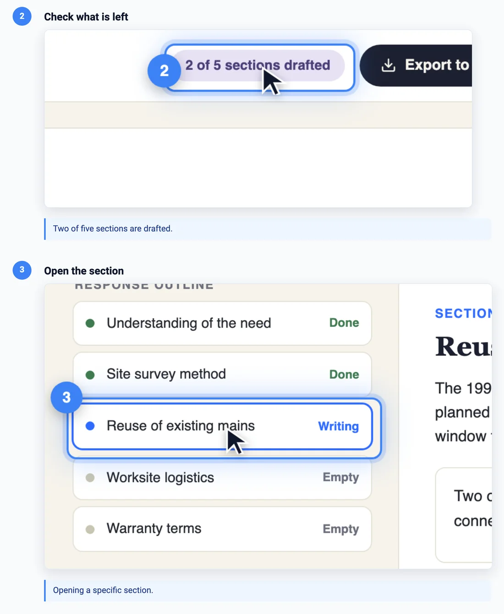

Every format, from one timeline
Your agent writes one screen and one timeline. Everything below is built from them: for a launch post, a help center, a homepage or a phone. Each format ends with the sentence to give your agent.
A demo video, cut the way you need it
The cursor, the clicks, the typing, the camera and the captions are rendered into an MP4. The length comes from the timeline, so a changed step never leaves a gap to re-edit.
What you get
demo.mp4the videodemo.vttsubtitles for any playerchaptersone per titled step, inside the MP4demo-step-02.mp4one short clip per step, for docs and social postsnarrationa spoken line per step, mixed into the video
"Export the demo as a video with narration and one clip per step."
A help article, or a whole help center
Every titled step becomes a numbered instruction with its own screenshot, already highlighted and cropped. List your guides in one catalog and one command builds all of them, in every language, rebuilding only the ones whose screen or timeline changed.

{ "outputDir": "help-out",
"defaults": { "locales": ["en", "fr"] },
"guides": [
{ "slug": "draft-response", "dir": "demo" },
{ "slug": "export-word", "dir": "guides/export" }
] }
What you get
guide.mdfor your docs siteguide.htmla standalone page, video inlineguide.jsonfor your own help centerindex.jsonevery guide in every language, one index
When a rebuild changes a screenshot beyond a threshold, the guide is flagged as stale, with a picture of what moved, so nobody publishes a help article that no longer matches the product.
"Set up a help center: one guide per feature, in English and French."
A homepage loop, in landscape and portrait
Silent, looping product clips that start when they scroll into view. One responsive screen makes both shapes: the desktop cut pushes the camera in on the answer, the phone cut skips the pushes a narrow screen has no room for. Both below come from the same two files.
What you get, per shape
clip.mp4 · .webmfor the webclip.giffor email and READMEsclip.poster.pngthe payoff frameembed-mobile.htmldrop-in page, plays in view
Any step can be marked desktop-only or phone-only, or carry a phone override. Visitors who ask for reduced motion get the still frame.
"Make a 10-second loop for our homepage, in landscape and in portrait for phones."
An interactive tour you can put on any page
Visitors pause, step back and pick the next scenario. Nothing is encoded: the tour is the screen itself, so it stays sharp at any size and weighs what a web page weighs. One tag puts it on your own site, and it picks the desktop or phone version from the visitor's screen.
<script type="module" src="https://your-site.com/tour/anim-tour.js"></script> <anim-tour src="https://your-site.com/tour/" scenario="draft-response" autoplay="inview"></anim-tour>
What you get
index.htmlthe full tour, every scenario in a listanim-tour.jsthe one-tag embedembed-*.snippet.htmlfor a CMS that strips scriptstourstep · tourendevents for your analytics
Several scenarios can share one screen, so one product needs one mockup. Open the full Clarido tour to see the scenario list.
"Build an interactive tour with three scenarios, for desktop and phone, and embed it on our pricing page."
Every format, in every language
A translation reuses the timeline step for step. Only the words change: one strings file for the titles and captions, and the translated screen. Dates, numbers and currencies follow the locale, and every format above comes out in that language too.
What you get
locales/fr/the translated screenstrings.fr.jsontitles, captions, narration
"Make a French version of every demo."
Your real app, not just a mockup
The same timeline can play in your running app: real pages, real navigation, your signed-in session. You get the same video and the same help guide, recorded from staging instead of from a mockup.
{ "id": "save", "time": "6s", "action": "click",
"target": "[data-help='save']",
"waitFor": "[data-help='editor']",
"title": "Save your changes" }
What it handles
waitForwaits for your page before each stepauth.jsonsign in once, reuse the sessionresetputs your data back between passes
"Record the demo against our staging app at https://staging.example.com."
Start with one demo. Ask for the rest.
Every format on this page is one sentence away once the first demo exists. Free, open source, and it runs on your machine.